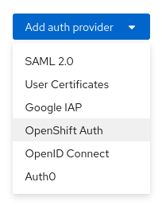
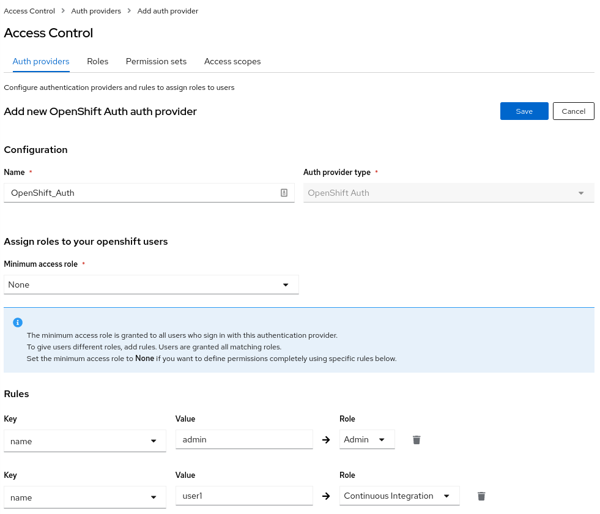
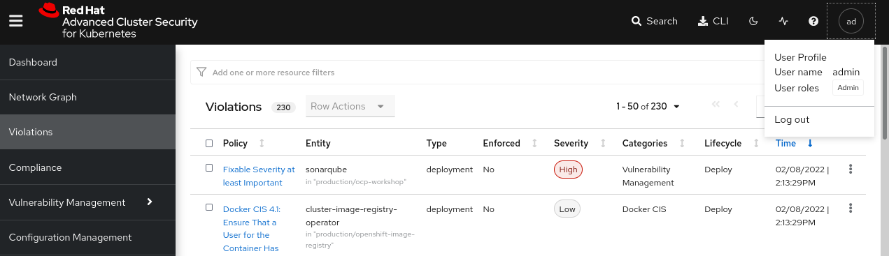
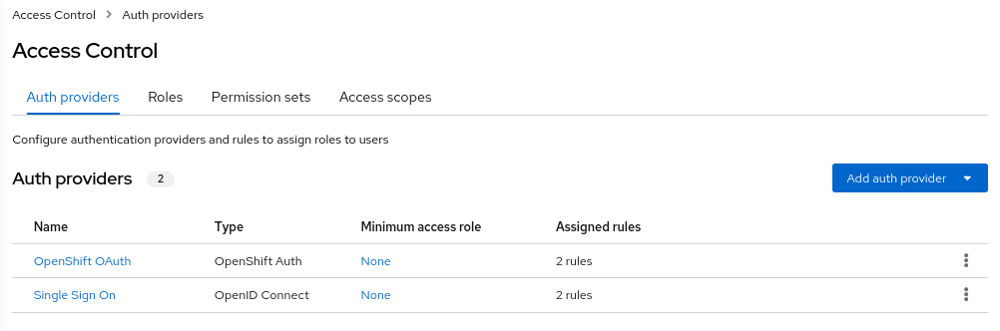
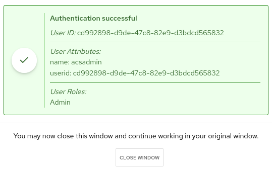

Integrations
| In RHACS the Scanner component only scans those images that are not already scanned by other integrated vulnerability scanners. It means that if you have integrated Red Hat Advanced Cluster Security for Kubernetes with other vulnerability scanners, Scanner checks and uses the scanning results from the integrated scanner if available. |
Integrate RHACS with the Internal Openshift Registry
Idea originally posted by Mark Roberts in this great blog post, and adapt to consume internally
Red Hat Advanced Cluster Security can be used to scan images held within OpenShift image streams (the OpenShift registry).
This can be helpful within continuous integration processes, to enable organizations to scan images for policy violations and vulnerabilities prior to pushing the image to an external container registry.
In this way, the quality of container images that get to the external registry improves, and triggered activities that result from a new image appearing in the registry only happen for a good reason.
Generate a namespace and extract the token name of the pipeline serviceaccount
export NSINTEGRATION="integration-internal-registry"
oc new-project $NSINTEGRATION
SECRET_TOKEN_NAME=$(oc get sa -n $NSINTEGRATION pipeline -o jsonpath='{.secrets[*]}' | jq -r .name | grep token)
PIPELINE_TOKEN=$(oc get secret -n $NSINTEGRATION $SECRET_TOKEN_NAME -o jsonpath='{.data.token}' | base64 -d)
echo $PIPELINE_TOKEN
oc policy add-role-to-user admin system:serviceaccount:$NSINTEGRATION:pipeline -n $NSINTEGRATIONConfigure RHACS integration for Internal Openshift Registry
To allow the roxctl command line interface to scan the images within the OpenShift registry, add an integration of type “Generic Docker Registry'', from the Platform Configuration - Integrations menu.
Fill in the fields as shown in figure 1, giving the integration a unique name that should include the cluster name for practicality. Paste in the username and token and select Disable TLS certificate validation if you need insecure https communication to a test cluster, for example.
Press the test button to validate the connection and press “save” when the test is successful.

TODO: Finish the integration!!
Integrate RHACS Notifications with Slack
If you are using Slack, you can forward alerts from Red Hat Advanced Cluster Security for Kubernetes to Slack.
Create a new Slack app, enable incoming webhooks, and get a webhook URL.
To do this step, follow the Configuration Slack documentation guide for generate a slack channel and the webhook url into the Slack workspace.
On the RHACS portal, navigate to Platform Configuration → Integrations.

Create a new integration in Red Hat Advanced Cluster Security for Kubernetes by using the webhook URL.

| the webhook URL will have the format of "https://hooks.slack.com/services/ZZZ/YYY/XXX" |
Click Test and check the Slack Channel:

| by default all the notifications in the system policies are disabled. If you have not configured any other integrations, you will see No notifiers configured!. |
For enable the Policy Notifications, select a System Policy and click on Actions, then Enable Notification:

Then in the System Policy selected, in the Notification will appear the Slack notification that it’s enabled.

When a System Policy is violated, and appears in Violations, will be sent a Notification to Slack though the Slack integration notifier showing the information of the System Policy violated and more details about that:

Integrate RHACS with OpenShift OAuth
Red Hat Advanced Cluster Security (RHACS) Central is installed with one administrator user by default. Typically, customers request an integration with existing Identity Provider(s) (IDP).
RHACS offers different options for such integration. In this section we will see the integration with OpenShift OAuth.
| It is assumed that RHACS is already installed and login to the Central UI is available. |
-
Login to your RHACS and select “Platform Configuration” > “Access Control”

-
From the drop down menu Add auth provider select OpenShift Auth
 -
Enter a Name for your provider and select a default role which is assigned to any user who can authenticate. It is recommended to select the role None, so new accounts will have no privileges in RHACS. With Rules you can assign roles to specific users, based on their userid, name, mail address or groups. For example the user with the name admin gets the role Admin assigned. On the other hand the user1 will have the role of Continuous Integration.
 -
After Save the integration will appear as Auth Provider

-
In a private windows of your browser login into the RHACS portal, and check the OpenShift OAuth auth provider that you set up

-
Login first with the admin user

-
Admin user will have the role Admin in RHACS, so will have full privileges in the RHACS console. Check that you have full view of the Violations or Compliance among others.
 -
Logout and login again but this time with the user user1 instead

-
This user have very limited privileges and for example cannot see the Violations in the cluster neither compliance

-
This user only have the role of the Continuous Integration, so will only have access to the CVE analysis in the Vulnerability Management among others, but not other actions like the Violations, Policies, etc

Integrate RHACS with Red Hat Single Sign On
The following steps will create some basic example objects to an existing RHSSO or Keycloak to test the authentication at RHACS.
-
Create the namespace for the single-sign-on
oc new-project single-sign-on -
Create the OperatorGroup for install the RHSSO operator
apiVersion: operators.coreos.com/v1 kind: OperatorGroup metadata: annotations: olm.providedAPIs: Keycloak.v1alpha1.keycloak.org,KeycloakBackup.v1alpha1.keycloak.org,KeycloakClient.v1alpha1.keycloak.org,KeycloakRealm.v1alpha1.keycloak.org,KeycloakUser.v1alpha1.keycloak.org generateName: single-sign-on name: single-sign-on spec: targetNamespaces: - single-sign-onoc apply -f sso-og.yaml -
Create the Subscription Operator for the RHSSO
apiVersion: operators.coreos.com/v1alpha1 kind: Subscription metadata: name: rhsso-operator spec: channel: alpha installPlanApproval: Manual name: rhsso-operator source: redhat-operators sourceNamespace: openshift-marketplaceoc apply -f sso-subs.yaml -
Create an instance of Keycloak
apiVersion: keycloak.org/v1alpha1 kind: Keycloak metadata: name: rhacs-keycloak namespace: single-sign-on spec: externalAccess: enabled: true instances: 1oc apply -f sso-instance.yaml -
Create the Realm for the installation called Basic
apiVersion: keycloak.org/v1alpha1 kind: KeycloakRealm metadata: name: rhacs-keycloakrealm namespace: single-sign-on spec: instanceSelector: matchLabels: app: sso realm: displayName: Basic Realm enabled: true id: basic realm: basicoc apply -f sso-realm.yaml -
Login into Red Hat SSO. Get the route to your RHSSO instance and log into the Administration Interface.
oc get route keycloak -n single-sign-on --template='{{ .spec.host }}' -
Extract the admin password for Keycloak. The secret name is build from "credential"<keycloak-instance-name>
oc extract secret/credential-rhacs-keycloak -n single-sign-on --to=-# ADMIN_PASSWORD <you password> # ADMIN_USERNAME admin -
Be sure to select your Realm (Basic in our case), goto Clients and select a ClientID and enable the option Implicit Flow

-
Get the Issuer URL from your realm. This is typically your:

-
It’s time to Create Test Users to login! In RHSSO create 2 user accounts to test the authentication later. Goto Users and create the users:
User: acsadmin First Name: acsadmin
User: user1 First Name: user 1You can set any other values for these users. However, be sure to set a password for both, after they have been created.
-
To configure RHACS Authentication: RHSS, login to your RHACS and select “Platform Configuration” > “Access Control”

-
Enter a “Name” for your provider i.e. “Single Sign On”
-
Leave the “Callback Mode” to the “Auto-Select” setting
-
Enter your Issuer URL
-
As Client ID enter account (or the ClientID you would like to use)
-
Leave the Client Secret empty and select the checkbox Do not use Client Secret which is good enough for our tests.
-
Remember the two callback URL from the blue box. They must be configured in Keycloak.
-
Select a default role which is assigned to any user who can authenticate.
-
It is recommended to select the role None, so new accounts will have no privileges in RHACS.
-
-
With Rules you can assign roles to specific users, based on their userid, name, mail address or groups.

For example the user with the name admin (which have been created previously in our RHSSO) gets the role Admin assigned.
-
What is left to do is the configuration of redirect URLs. These URLs are shown in the RHACS Authentication Provider configuration (see blue field in the image above)
 -
Log back into RHSSO and select “Clients” > “account”
-
Into Valid Redirect URLs enter the two URLs which you saved from the blue box in the RHACS configuration.
 -
Verify Authentication with OpenShift Auth.
-
Logout from the Central UI and reload the browser.
-
Select from the drop down Single Sign On

-
Try to login with a valid SSO user. Depending on the Rules which have been defined during previous steps the appropriate permissions should be assigned.
For example: If you login as user acsadmin the role Admin is assigned.